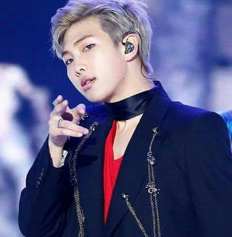
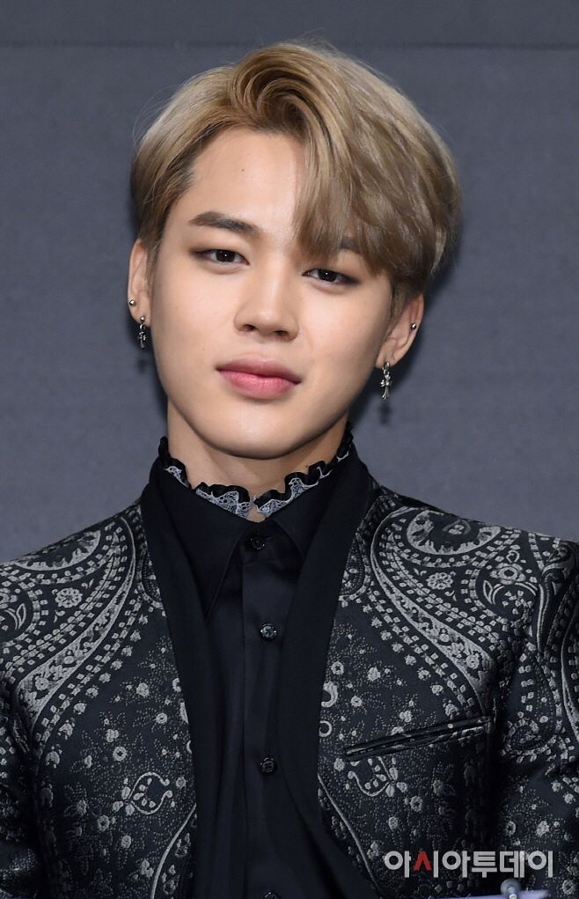

BTS is a South-Korean boy band composed of seven members: RM (Kim Namjoon), Jin (Kim Seokjin), Suga (Min Yoongi), J-Hope (Jung Hoseok), Jimin (Park Jimin), V (Kim Taehyung), and Jungkook (Jeon Jungkook). The group is composed of three rappers and four vocalists. The boys are known for their variety in genres of music and cinematic music videos. BTS stands for Beyond the Scene in English and "Bangtan Sonyeondan" in romanized Korean, which means bulletproof boy scouts.
Since their debut in 2013, BTS have become quite popular internationally and have won many awards all over the globe. They even won some of the largest ones in the US. They also had the honour to pesent a speech at the United Nations about loving yourself, speaking yourself, find your voice, and ending violence on September 24, 2018.
RM also known as Kim Namjoon is the leader and spokesperson of BTS. He is 25 years old and was the first member to sign with their record company Bighit Entertainment. He was the one who delivered the speech at the United Nations and is the one who usually speaks the most at US interviews as he is fluent in English. He has an impressive IQ of 148.
Jin also known as Kim Seokjin is the visual of BTS. This means that he was casted as best looking to be the face of the group. Though this is not popular in the West, most Kpop groups have a visual. However, his main role in the group is a vocalist. He is the oldest of the group at the age of 26. Aside from being a Kpop idol, Jin is also a skilled cook and has his own restaurant in Korea.
Suga also known as Min Yoongi is the main rapper of BTS. He is 24 years old and aside from being the main rapper, he also composes most of BTS's songs on the piano. He works on their soongs in his studio that he calls the "Genius Lab".
J-Hope also known as Jung Hoseok is the main dancer of BTS. He is 24 years old. He coreographs the dance coreographies that BTS have for most of their songs. He is also resposible for teaching the other members the dances. He was innitially supposed to be a vocalist but became a rapper since his bandmate Kim Taehyung wanted to be a vocalist instead of a rapper. The two then in order to keep the innitial number of vocalists and rappers.

Jimin, whose full name is Park Jimin is the main dancer and volcalist of BTS. He is 23 years old. His impressive contemporary, modern, and ballet sttyle dance make him stand out. His talent convinced his highschool dance teacher to personally pay for his dance school tuition as his family couldnt afford it. Fans adore his stage presence and unique voice and dance.
V also known as Kim Taehyung is another vocalist of BTS. He is 23 years old and is best known for his very deep voice which provides contrast with the voices of the other vocalists. Though the is not the official visual of the group, Taehyung has won many awards in Korea, as well as Worldwide for his looks. For instance, he was voted #1 in the 100 Top Most Handsome Faces in 2017 ans 2018.

Jungkook, whose full name is Jeon Jungkook is the main volcalist of BTS. He is the youngest at 21 years old. He is called the "Golden Maknae" of the group. In Korean, "maknae" means the youngest one and the called "golden" since he said to be good at everything. Even if his role is main vocalist, he can also rap, dance, play sports, study well, and is also considered good-looking. He can therefore perform well for any situation he is needed in.